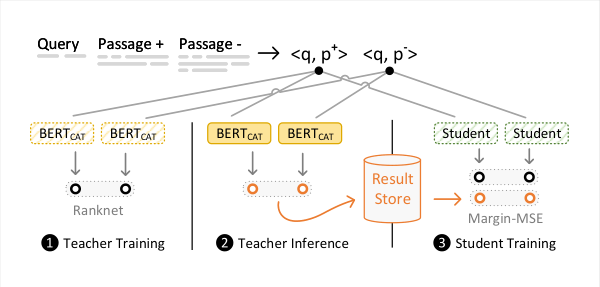

原文: arXiv:2010.02666（v2，2021-01-22） 说明: 中英对照供阅读。英文为论文原文（PDF 转写，公式按论文整理）；中文为对应翻译。图表编号与原文一致。caption 保留英文并附中译。数值原样，未改动。
预印本： arXiv:2010.02666v2 [cs.IR]，2021 年 1 月 22 日（v1 为 2020 年 10 月 6 日）。
代码与教师分数文件： https://github.com/sebastian-hofstaetter/neural-ranking-kd
Improving Efficient Neural Ranking Models with Cross-Architecture Knowledge Distillation¶
用跨架构知识蒸馏改进高效神经排序模型¶
Authors / 作者： Sebastian Hofstätter, Sophia Althammer, Michael Schröder, Mete Sertkan, Allan Hanbury
Affiliation / 单位： TU Wien, Vienna, Austria / 维也纳工业大学，奥地利维也纳
Email / 邮箱： first.last@tuwien.ac.at
Abstract / 摘要¶
EN. Retrieval and ranking models are the backbone of many applications such as web search, open domain QA, or text-based recommender systems. The latency of neural ranking models at query time is largely dependent on the architecture and deliberate choices by their designers to trade-off effectiveness for higher efficiency. This focus on low query latency of a rising number of efficient ranking architectures make them feasible for production deployment. In machine learning an increasingly common approach to close the effectiveness gap of more efficient models is to apply knowledge distillation from a large teacher model to a smaller student model. We find that different ranking architectures tend to produce output scores in different magnitudes. Based on this finding, we propose a cross-architecture training procedure with a margin focused loss (Margin-MSE), that adapts knowledge distillation to the varying score output distributions of different BERT and non-BERT passage ranking architectures. We apply the teachable information as additional fine-grained labels to existing training triples of the MSMARCO-Passage collection. We evaluate our procedure of distilling knowledge from state-of-the-art concatenated BERT models to four different efficient architectures (TK, ColBERT, PreTT, and a BERT CLS dot product model). We show that across our evaluated architectures our Margin-MSE knowledge distillation significantly improves re-ranking effectiveness without compromising their efficiency. Additionally, we show our general distillation method to improve nearest neighbor based index retrieval with the BERT dot product model, offering competitive results with specialized and much more costly training methods. To benefit the community, we publish the teacher-score training files in a ready-to-use package.
中. 检索与排序模型是网页搜索、开放域问答、基于文本的推荐系统等许多应用的骨干。神经排序模型在查询时的延迟，很大程度上取决于架构，以及设计者为换取更高效率而主动牺牲效果所做的取舍。越来越多高效排序架构对低查询延迟的关注，使它们可以用于生产部署。在机器学习里，一个日益常见的、用来缩小高效模型效果差距的做法，是从大教师模型向小学生模型做知识蒸馏。我们发现，不同的排序架构倾向于产生量级不同的输出分数。基于这一发现，我们提出一套带间隔导向损失（Margin-MSE）的跨架构训练流程，使知识蒸馏适配不同 BERT 与非 BERT 段落排序架构各异的分数输出分布。我们把可教的信息作为额外的细粒度标签，加到 MSMARCO-Passage 语料已有的训练三元组上。我们评估了把知识从当时最优的拼接式 BERT 模型蒸馏到四种不同高效架构（TK、ColBERT、PreTT，以及一个 BERT CLS 点积模型）的流程。结果表明，在我们评估的各架构上，Margin-MSE 知识蒸馏在不损害效率的前提下显著提升了重排效果。此外，我们表明这套通用蒸馏方法能改进 BERT 点积模型的最近邻索引检索，给出与专门设计、成本高得多的训练方法相当的结果。为了便于社区使用，我们把教师分数训练文件打包发布，可直接使用。
1 Introduction / 引言¶
EN. The same principles that applied to traditional IR systems to achieve low query latency also apply to novel neural ranking models: We need to transfer as much computation and data transformation to the indexing phase as possible to require less resources at query time [33, 34]. For the most effective BERT-based [11] neural ranking models, which we refer to as BERT\(_\mathrm{CAT}\), this transfer is simply not possible, as the concatenation of query and passage require all Transformer layers to be evaluated at query time to receive a ranking score [36].
中. 传统 IR 系统为实现低查询延迟所依据的原则，同样适用于新的神经排序模型：我们需要把尽可能多的计算和数据变换搬到索引阶段，以便查询时少占资源 [33, 34]。而对效果最好的、基于 BERT [11] 的神经排序模型（我们称之为 BERT\(_\mathrm{CAT}\)），这种搬移根本做不到：查询与段落的拼接要求在查询时把所有 Transformer 层都算一遍，才能得到排序分数 [36]。
EN. To overcome this architecture restriction the neural-IR community proposed new architectures by deliberately choosing to trade-off effectiveness for higher efficiency. Among these low query latency approaches are: TK [18] with shallow Transformers and separate query and document contextualization; ColBERT [21] with late-interactions of BERT term representations; PreTT [29] with a combination of query-independent and query-dependent Transformer layers; and a BERT-CLS dot product scoring model which we refer to as BERT\(_\mathrm{DOT}\), also known in the literature as Tower-BERT [4], BERT-Siamese [44], or TwinBERT [27].1 Each approach has unique characteristics that make them suitable for production-level query latency which we discuss in Section 2.
中. 为克服这一架构限制，神经 IR 社区提出了一些新架构，主动用效果换取更高效率。这些低查询延迟的方案包括：TK [18]，用浅层 Transformer 并把查询与文档分开上下文化；ColBERT [21]，对 BERT 词项表示做迟交互；PreTT [29]，把与查询无关和与查询有关的 Transformer 层组合起来；以及一个 BERT-CLS 点积打分模型，我们称之为 BERT\(_\mathrm{DOT}\)，文献中也叫 Tower-BERT [4]、BERT-Siamese [44] 或 TwinBERT [27]。1 每种方案都有独特的性质，使它们能达到生产级的查询延迟，我们在第 2 节讨论。
1 Yes, we see the irony: https://xkcd.com/927/ / 是的，我们也看到这里的讽刺之处（指同一事物有太多互不统一的命名）。
EN. An increasingly common way to improve smaller or more efficient models is to train them, as students, to imitate the behavior of larger or ensemble teacher models via Knowledge Distillation (KD) [15]. This is typically applied to the same architecture with fewer layers and dimensions [20, 38] via the output or layer-wise activations [39]. KD has been applied in the ranking task for the same architecture with fewer layers [5, 14, 25] and in constrained sub-tasks, such as keyword-list matching [27].
中. 一个日益常见的改进小模型或高效模型的办法，是通过知识蒸馏（KD）[15] 把它们当作学生，训练它们模仿更大的模型或教师集成的行为。通常的做法是在同一架构上减少层数和维度 [20, 38]，通过输出或逐层激活来蒸馏 [39]。在排序任务中，KD 已被用于同一架构的减层版本 [5, 14, 25]，以及受限的子任务，例如关键词列表匹配 [27]。
EN. In this work we propose a model-agnostic training procedure using cross-architecture knowledge distillation from BERT\(_\mathrm{CAT}\) with the goal to improve the effectiveness of efficient passage ranking models without compromising their query latency benefits.
中. 本文提出一套与模型无关的训练流程，从 BERT\(_\mathrm{CAT}\) 出发做跨架构知识蒸馏，目标是在不损害高效段落排序模型的查询延迟优势的前提下提升它们的效果。
EN. A unique challenge for knowledge distillation in the ranking task is the possible range of scores, i.e. a ranking model outputs a single unbounded decimal value and the final result solely depends on the relative ordering of the scores for the candidate documents per query. We make the crucial observation, depicted in Figure 1, that different architectures during their training gravitate towards unique range patterns in their output scores. The BERT\(_\mathrm{CAT}\) model exhibits positive relevant-document scores, whereas on average the non-relevant documents are below zero. The TK model solely produces negative averages, and the BERT\(_\mathrm{DOT}\) and ColBERT models, due to their dot product scoring, show high output scores. This leads us to our main research question:
中. 排序任务中知识蒸馏的一个独特挑战在于分数的取值范围：排序模型输出的是一个无界的小数值，而最终结果只取决于同一查询下候选文档分数之间的相对次序。我们做出一个关键观察（见图 1）：不同架构在训练过程中会各自飘向独特的分数区间模式。BERT\(_\mathrm{CAT}\) 模型在相关文档上给出正分，而不相关文档的均值在零以下。TK 模型只产生负的均值；BERT\(_\mathrm{DOT}\) 和 ColBERT 由于用点积打分，输出分数很高。这引出我们的主要研究问题：
EN. RQ1 How can we apply knowledge distillation in retrieval across architecture types?
中. RQ1 我们如何在检索中跨架构类型应用知识蒸馏？

图 1 / Figure 1. Raw query-passage pair scores during training of different ranking models. The margin between the positive and negative samples is shaded. / 不同排序模型训练过程中原始的 query-passage 对分数。正样本与负样本之间的间隔用阴影表示。
EN. To optimally support the training of cross-architecture knowledge distillation, we allow our models to converge to a free scoring range, as long as the margin is alike with the teacher. We make use of the common triple (q, relevant doc, non-relevant doc) training regime, by distilling knowledge via the margin of the two scoring pairs. We train the students to learn the same margin as their teachers, which leaves the models to find the most comfortable or natural range for their architecture. We optimize the student margin to the teacher margin with a Mean Squared Error loss (Margin-MSE). We confirm our strategy with an ablation study of different knowledge distillation losses and show the Margin-MSE loss to be the most effective.
中. 为了最好地支撑跨架构知识蒸馏的训练，我们允许模型收敛到自由的分数区间，只要间隔与教师相近即可。我们利用常见的三元组（查询，相关文档，不相关文档）训练范式，通过两个打分对之间的间隔来蒸馏知识。我们训练学生去学到与教师相同的间隔，这样模型就可以为自己的架构找到最舒适、最自然的取值范围。我们用均方误差损失（Margin-MSE）把学生间隔优化到教师间隔上。我们用一项不同知识蒸馏损失的消融研究验证了这个策略，并表明 Margin-MSE 损失最有效。
EN. Thanks to the rapid advancements and openness of the Natural Language Processing community, we have a number of pre-trained BERT-style language models to choose from to create different variants of the BERT\(_\mathrm{CAT}\) architecture to study, allowing us to answer:
中. 得益于自然语言处理社区的快速进展与开放性，我们有若干预训练的 BERT 式语言模型可供选择，用来构造 BERT\(_\mathrm{CAT}\) 架构的不同变体加以研究，从而可以回答：
EN. RQ2 How effective is the distillation with a single teacher model in comparison to an ensemble of teachers?
中. RQ2 相比教师集成，用单个教师模型做蒸馏的效果如何？
EN. We train three different BERT\(_\mathrm{CAT}\) versions as teacher models with different initializations: BERT-Base [11], BERT-Large with whole word masking [11], and ALBERT-large [24]. To understand the behavior that the different language models bring to the BERT\(_\mathrm{CAT}\) architecture, we compare their training score margin distributions and find that the models offer variability suited for an ensemble.
中. 我们训练了三个不同的 BERT\(_\mathrm{CAT}\) 版本作为教师模型，初始化各不相同：BERT-Base [11]、带全词掩码的 BERT-Large [11]，以及 ALBERT-large [24]。为理解不同语言模型给 BERT\(_\mathrm{CAT}\) 架构带来的行为差异，我们比较了它们训练时的分数间隔分布，发现这些模型提供的变化性适合做集成。
EN. We created the teacher ensemble by averaging each of the three scores per query-document pair. We conduct the knowledge distillation with a single teacher and a teacher ensemble. The knowledge distillation has a general positive effect on all retrieval effectiveness metrics of our student models. In most cases the teacher ensemble further improves the student models' effectiveness in the re-ranking scenario above the already improved single teacher training.
中. 我们通过对每个 query-document 对的三个分数取平均来构造教师集成。我们分别用单教师和教师集成做知识蒸馏。知识蒸馏对我们学生模型的所有检索效果指标总体上都有正面作用。多数情况下，在重排场景里，教师集成能在单教师训练已有提升的基础上，进一步提升学生模型的效果。
EN. The dual-encoder BERT\(_\mathrm{DOT}\) model can be used for full collection indexing and retrieval with a nearest neighbor vector search approach, so we study:
中. 双编码器 BERT\(_\mathrm{DOT}\) 模型可以用最近邻向量检索的方式对全语料建索引并检索，因此我们研究：
EN. RQ3 How effective is our distillation for dense nearest neighbor retrieval?
中. RQ3 我们的蒸馏对稠密最近邻检索效果如何？
EN. We observe similar trends in terms of effectiveness per teacher strategy, with increased effectiveness of BERT\(_\mathrm{DOT}\) models for a single teacher and again a higher increase for the ensemble of teachers. Even though we do not add dense retrieval specific training methods, such as index-based passage sampling [44] or in-batch negatives [26] we observe very competitive results compared to those much more costly training approaches.
中. 按教师策略来看，我们观察到类似的效果趋势：单教师使 BERT\(_\mathrm{DOT}\) 模型效果提升，教师集成带来更大的提升。尽管我们并未加入稠密检索专用的训练方法，例如基于索引的段落采样 [44] 或批内负例 [26]，我们观察到的结果与那些成本高得多的训练方案相比仍很有竞争力。
EN. To put the improved models in the perspective of the efficiency-effectiveness trade-off, we investigated the following question:
中. 为了把改进后的模型放到效率-效果取舍的视角下考察，我们研究了下面这个问题：
EN. RQ4 By how much does effective knowledge distillation shift the balance in the efficiency-effectiveness trade-off?
中. RQ4 有效的知识蒸馏把效率-效果取舍的平衡点挪动了多少？
EN. We show how the knowledge distilled efficient architectures outperform the BERT\(_\mathrm{CAT}\) baselines on several metrics. There is no longer a compromise in utilizing PreTT or ColBERT and the effectiveness gap, i.e. the difference between the most effective and the other models, of BERT\(_\mathrm{DOT}\) and TK is significantly smaller.
中. 我们表明，经知识蒸馏的高效架构在若干指标上超过了 BERT\(_\mathrm{CAT}\) 基线。使用 PreTT 或 ColBERT 已不再需要做出让步；而 BERT\(_\mathrm{DOT}\) 和 TK 的效果差距（即最有效的模型与其他模型之间的差异）也显著缩小了。
EN. The contributions of this work are as follows:
- We propose a cross-architecture knowledge distillation procedure with a Margin-MSE loss for a range of neural retrieval architectures
- We conduct a comprehensive study of the effects of cross-architecture knowledge distillation in the ranking scenario
- We publish our source code as well as ready-to-use teacher training files for the community at: https://github.com/sebastian-hofstaetter/neural-ranking-kd
中. 本工作的贡献如下：
- 我们为一系列神经检索架构提出了带 Margin-MSE 损失的跨架构知识蒸馏流程
- 我们对排序场景下跨架构知识蒸馏的效果做了全面研究
- 我们向社区公开了源代码以及可直接使用的教师训练文件，地址见上
2 Retrieval Models / 检索模型¶
EN. We study the effects of knowledge distillation on a wide range of recently introduced Transformer- & BERT-based ranking models. We describe their architectures in detail below and summarize them in Table 1.
中. 我们研究知识蒸馏在一系列近期提出的、基于 Transformer 与 BERT 的排序模型上的效果。下面详述它们的架构，并在表 1 中汇总。
表 1 / Table 1. Comparison of model characteristics using DistilBERT instances. Effectiveness compares the baseline nDCG@10 of MSMARCO-DEV. NN Index refers to indexing the passage representations in a nearest neighbor index. \(\lvert P\rvert\) refers to the number of passages; \(\lvert T\rvert\) to the total number of term occurrences in the collection; \(m\) the query length; and \(n\) the document length. / 用 DistilBERT 实例化时的模型特性对比。Effectiveness 比较的是 MSMARCO-DEV 上的基线 nDCG@10。NN Index 指把段落表示放进最近邻索引。\(\lvert P\rvert\) 为段落数；\(\lvert T\rvert\) 为语料中词项出现的总次数；\(m\) 为查询长度；\(n\) 为文档长度。
| Model | Effectiveness | Query Latency | GPU Memory | Query-Passage Interaction | Passage Cache | NN Index | Storage Req. (× Vector Size) |
|---|---|---|---|---|---|---|---|
| BERT\(_\mathrm{CAT}\) | 1 | 950 ms | 10.4 GB | All TF layers | – | – | – |
| BERT\(_\mathrm{DOT}\) | × 0.87 | 23 ms | 3.6 GB | Single dot product | ✓ | ✓ | \(\lvert P\rvert\) |
| ColBERT | × 0.97 | 28 ms | 3.4 GB | \(m \ast n\) dot products | ✓ | ✓ | \(\lvert T\rvert\) |
| PreTT | × 0.97 | 455 ms | 10.9 GB | Min. 1 TF layer (here 3) | ✓ | – | \(\lvert T\rvert\) |
| TK | × 0.89 | 14 ms | 1.8 GB | \(m \ast n\) dot products + Kernel-pooling | ✓ | – | \(\lvert T\rvert\) |
中文对照：交互方式一列依次为「全部 TF 层」、「单次点积」、「\(m \ast n\) 次点积」、「至少 1 个 TF 层（这里取 3）」、「\(m \ast n\) 次点积 + 核池化」。Passage Cache 为段落表示是否可缓存，NN Index 为是否可建最近邻索引。
2.1 BERT\(_\mathrm{CAT}\) Concatenated Scoring / BERT\(_\mathrm{CAT}\) 拼接打分¶
EN. The common way of utilizing the BERT pre-trained Transformer model in a re-ranking scenario [31, 36, 47] is by concatenating query and passage input sequences. We refer to this base architecture as BERT\(_\mathrm{CAT}\). In the BERT\(_\mathrm{CAT}\) ranking model, the query \(q_{1:m}\) and passage \(p_{1:n}\) sequences are concatenated with special tokens (using the ; operator) and the CLS token representation computed by BERT (selected with \(_1\)) is scored with single linear layer \(W_s\):
中. 在重排场景 [31, 36, 47] 中使用 BERT 预训练 Transformer 模型的常见方式，是把查询与段落的输入序列拼接起来。我们称这个基础架构为 BERT\(_\mathrm{CAT}\)。在 BERT\(_\mathrm{CAT}\) 排序模型中，查询序列 \(q_{1:m}\) 和段落序列 \(p_{1:n}\) 用特殊 token 拼接（用 ; 运算符表示），BERT 算出的 CLS token 表示（用下标 \(_1\) 选出）再由单个线性层 \(W_s\) 打分：
EN. We utilize BERT\(_\mathrm{CAT}\) as our teacher architecture, as it represents the current state-of-the art in terms of effectiveness, however it requires substantial compute at query time and increases the query latency by seconds [16, 44]. Simply using smaller BERT variants does not change the design flaw of having to compute every representation at query time.
中. 我们用 BERT\(_\mathrm{CAT}\) 作教师架构，因为它代表了当时效果上的最优水平；但它在查询时需要大量计算，使查询延迟增加若干秒 [16, 44]。单纯换用更小的 BERT 变体，并不能改变「必须在查询时计算每一个表示」这个设计缺陷。
2.2 BERT\(_\mathrm{DOT}\) Dot Product Scoring / BERT\(_\mathrm{DOT}\) 点积打分¶
EN. In contrast to BERT\(_\mathrm{CAT}\), which requires a full online computation, the BERT\(_\mathrm{DOT}\) model only matches a single CLS vector of the query with a single CLS vector of a passage [27, 28, 44]. The BERT\(_\mathrm{DOT}\) model uses two independent BERT computations as follows:
中. 与需要完整在线计算的 BERT\(_\mathrm{CAT}\) 不同，BERT\(_\mathrm{DOT}\) 模型只把查询的单个 CLS 向量与段落的单个 CLS 向量做匹配 [27, 28, 44]。BERT\(_\mathrm{DOT}\) 模型使用两次独立的 BERT 计算：
EN. which allows us to pre-compute every contextualized passage representation \(\hat{p}\). After this, the model computes the final scores as the dot product \(\cdot\) of \(\hat{q}\) and \(\hat{p}\):
中. 这使我们可以预先算好每一个上下文化的段落表示 \(\hat{p}\)。之后，模型用 \(\hat{q}\) 与 \(\hat{p}\) 的点积 \(\cdot\) 作为最终分数：
EN. BERT\(_\mathrm{DOT}\), with its bottleneck of comparing single vectors, compresses information much more strongly than BERT\(_\mathrm{CAT}\), which brings large query time improvements at the cost of lower effectiveness, as can be seen in Table 1.
中. BERT\(_\mathrm{DOT}\) 以「只比较单个向量」为瓶颈，信息压缩程度远强于 BERT\(_\mathrm{CAT}\)，由此带来查询时间上的大幅改善，代价是效果下降，如表 1 所示。
2.3 ColBERT / ColBERT¶
EN. The ColBERT model [21] is similar in nature to BERT\(_\mathrm{DOT}\), by delaying the interactions between query and document to after the BERT computation. ColBERT uses every query and document representation:
中. ColBERT 模型 [21] 本质上与 BERT\(_\mathrm{DOT}\) 类似，把查询与文档之间的交互延迟到 BERT 计算之后。ColBERT 使用每一个查询和文档的表示：
EN. where the rep(\(MASK\)) method repeats the MASK token a number of times, set by a hyperparameter. Khattab and Zaharia [21] introduced this query augmentation method to increase the computational capacity of the BERT model for short queries. We independently confirmed that adding these MASK tokens improves the effectiveness of ColBERT. The interactions in the ColBERT model are aggregated with a max-pooling per query term and sum of query-term scores as follows:
中. 其中 rep(\(MASK\)) 方法把 MASK token 重复若干次，次数由一个超参数设定。Khattab and Zaharia [21] 引入这种查询增强方法，以提升 BERT 模型在短查询上的计算容量。我们独立验证了加入这些 MASK token 能提升 ColBERT 的效果。ColBERT 模型中的交互按每个查询词项做最大池化、再对查询词项分数求和来聚合：
EN. The aggregation only requires \(n \ast m\) dot product computations, making it roughly as efficient as BERT\(_\mathrm{DOT}\), however the storage cost of pre-computing passage representations is much higher and depends on the total number of terms in the collection. Khattab and Zaharia [21] proposed to compress the dimensions of the representation vectors by reducing the output features of \(W_s\). We omitted this compression, as storage space is not the focus of our study and to better compare results across different models.
中. 这种聚合只需要 \(n \ast m\) 次点积计算，使它的效率大致与 BERT\(_\mathrm{DOT}\) 相当；但预计算段落表示的存储成本要高得多，且取决于语料中词项的总数。Khattab and Zaharia [21] 提出通过减少 \(W_s\) 的输出特征数来压缩表示向量的维度。我们省略了这种压缩，因为存储空间不是本研究的重点，而且不压缩更便于在不同模型之间比较结果。
2.4 PreTT / PreTT¶
EN. The PreTT architecture [29] is conceptually between BERT\(_\mathrm{CAT}\) and ColBERT, as it allows to compute \(b\) BERT-layers separately for query and passage:
中. PreTT 架构 [29] 在概念上位于 BERT\(_\mathrm{CAT}\) 与 ColBERT 之间，因为它允许为查询和段落分别计算 \(b\) 个 BERT 层：
EN. Then PreTT concatenates the sequences with a SEP separator token and computes the remaining layers to compute a total of \(\hat{b}\) BERT-layers. Finally, the CLS token output is pooled with single linear layer \(W_s\):
中. 然后 PreTT 用 SEP 分隔符 token 把两个序列拼接起来，计算剩余的层，总共算 \(\hat{b}\) 个 BERT 层。最后，CLS token 的输出由单个线性层 \(W_s\) 池化：
EN. Concurrently to PreTT, DC-BERT [48] and EARL [13] have been proposed with very similar approaches to split Transformer layers. We selected PreTT simply as a representative of this group of models. Similar to ColBERT, we omitted the optional compression of representations for better comparability.
中. 与 PreTT 同期，DC-BERT [48] 和 EARL [13] 也提出了非常相似的拆分 Transformer 层的方案。我们选 PreTT 只是把它当作这一类模型的代表。与 ColBERT 类似，为便于比较，我们省略了可选的表示压缩。
2.5 Transformer-Kernel / Transformer 核模型¶
EN. The Transformer-Kernel (TK) model [18] is not based on BERT pre-training, but rather uses shallow Transformers. TK independently contextualizes query \(q_{1:m}\) and passage \(p_{1:n}\) based on pre-trained word embeddings, where the intensity of the contextualization (Transformers as TF) is set by a gate \(\alpha\):
中. Transformer 核（TK）模型 [18] 不基于 BERT 预训练，而是使用浅层 Transformer。TK 基于预训练词向量，分别独立地对查询 \(q_{1:m}\) 和段落 \(p_{1:n}\) 做上下文化，上下文化的强度（Transformer 记作 TF）由一个门控 \(\alpha\) 设定：
EN. The sequences \(\hat{q}_{1:m}\) and \(\hat{p}_{1:n}\) interact in a match-matrix with a cosine similarity per term pair and each similarity is activated by a set of Gaussian kernels [43]:
中. 序列 \(\hat{q}_{1:m}\) 与 \(\hat{p}_{1:n}\) 在一个匹配矩阵中交互，对每个词项对计算余弦相似度，每个相似度再由一组高斯核激活 [43]：
EN. Kernel-pooling is a soft-histogram, which counts the number of occurrences of similarity ranges. Each kernel \(k\) focuses on a fixed range with center \(\mu_k\) and width of \(\sigma\).
中. 核池化是一个软直方图，用来统计各相似度区间出现的次数。每个核 \(k\) 关注一个固定区间，中心为 \(\mu_k\)，宽度为 \(\sigma\)。
EN. These kernel activations are then summed, first by the passage term dimension \(j\), log-activated, and then the query dimension is summed, resulting in a single score per kernel. The final score is calculated by a weighted sum using \(W_s\):
中. 这些核激活随后被求和：先按段落词项维度 \(j\) 求和，取对数激活，再按查询维度求和，于是每个核得到一个分数。最终分数由 \(W_s\) 做加权求和算出：
2.6 Comparison / 对比¶
EN. In Table 1 we summarize our evaluated models. We compare the efficiency and effectiveness trade-off in the leftmost section, followed by a general overview of the model capabilities in the right most section. We measure the query latency for 1 query and 1000 documents with cached document representations where applicable and report the peak GPU memory requirement for the inference of the validation set. We summarize our observations of the different model characteristics:
中. 表 1 汇总了我们评估的模型。最左侧部分比较效率与效果的取舍，最右侧部分则概览模型能力。我们在 1 条查询对 1000 篇文档的条件下测量查询延迟（在适用处使用缓存的文档表示），并报告在验证集推理时的峰值 GPU 显存需求。我们把对不同模型特性的观察总结如下：
EN.
- The query latency of BERT\(_\mathrm{CAT}\) is prohibitive for efficient production use (Except for head queries that can be fully pre-computed).
- BERT\(_\mathrm{DOT}\) is the most efficient BERT-based model with regards to storage and query latency, at the cost of lower effectiveness compared to ColBERT and PreTT.
- PreTT highly depends on the choice of the concatenation-layer hyperparameter, which we set to 3 to be between BERT\(_\mathrm{CAT}\) and ColBERT.
- ColBERT is especially suited for small collections, as it requires a large passage cache.
- TK is less effective overall, however it is much cheaper to run than the other models.
中.
- BERT\(_\mathrm{CAT}\) 的查询延迟高到无法用于高效的生产环境（除了那些可以完全预计算的头部查询）。
- 就存储和查询延迟而言，BERT\(_\mathrm{DOT}\) 是最高效的基于 BERT 的模型，代价是效果低于 ColBERT 和 PreTT。
- PreTT 高度依赖拼接层超参数的选择，我们把它设为 3，使其位于 BERT\(_\mathrm{CAT}\) 与 ColBERT 之间。
- ColBERT 特别适合小语料，因为它需要很大的段落缓存。
- TK 整体效果较差，但运行成本比其他模型低得多。
EN. The most suitable neural ranking model ultimately depends on the exact scenario. To allow people to make the choice, we evaluated all presented models. We use BERT\(_\mathrm{CAT}\) as our teacher architecture and the other presented architectures as students.
中. 最合适的神经排序模型最终取决于具体场景。为了让大家自行选择，我们评估了全部所述模型。我们用 BERT\(_\mathrm{CAT}\) 作教师架构，其他架构作学生。
3 Cross-Architecture Knowledge Distillation / 跨架构知识蒸馏¶
EN. The established approach to training deep neural ranking models is mainly based on large-scale annotated data. Here, the MSMARCO collection is becoming the de-facto standard. The MSMARCO collection only contains binary annotations for fewer than two positive examples per query, and no explicit annotations for non-relevant passages. The approach proposed by Bajaj et al. [1] is to utilize randomly selected passages retrieved from the top 1000 candidates of a traditional retrieval system as negative examples. This approach works reasonably well, but accidentally picking relevant passages is possible.
中. 训练深度神经排序模型的既有做法主要依赖大规模标注数据。在这方面，MSMARCO 语料正在成为事实标准。MSMARCO 语料只包含二值标注，每条查询不到两个正例，而且没有对不相关段落的显式标注。Bajaj et al. [1] 提出的做法是：把从传统检索系统前 1000 名候选中随机选出的段落当作负例。这个做法效果还算不错，但有可能偶然选中真正相关的段落。
EN. Neural retrieval models are commonly trained on triples of binary relevance assignments of one relevant and one non-relevant passage. However, they are used in a setting that requires a much more nuanced view of relevance when they re-rank a thousand possibly relevant passages. The BERT\(_\mathrm{CAT}\) architecture shows the strongest generalization capabilities, which other architectures do not posses.
中. 神经检索模型通常在「一个相关段落 + 一个不相关段落」的二值相关性三元组上训练。然而它们被用在需要对相关性有细致得多的判断的场景里——要对一千条可能相关的段落做重排。BERT\(_\mathrm{CAT}\) 架构展现出最强的泛化能力，这是其他架构所不具备的。
EN. Following our observation of distinct scoring ranges of different model architectures in Figure 1, we propose to utilize a knowledge distillation loss by only optimizing the margin between the scores of the relevant and the non-relevant sample passage per query. We call our proposed approach Margin Mean Squared Error (Margin-MSE). We train ranking models on batches containing triples of queries \(Q\), relevant passages \(P^{+}\), and non-relevant passages \(P^{-}\). We utilize the output margin of the teacher model \(M_t\) as label to optimize the weights of the student model \(M_s\):
中. 基于图 1 中「不同模型架构的分数区间各不相同」这一观察，我们提出一种知识蒸馏损失，只优化每条查询下相关样本段落与不相关样本段落分数之间的间隔。我们把提出的方法称为间隔均方误差（Margin Mean Squared Error, Margin-MSE）。我们在包含查询 \(Q\)、相关段落 \(P^{+}\)、不相关段落 \(P^{-}\) 三元组的批次上训练排序模型，用教师模型 \(M_t\) 的输出间隔作为标签来优化学生模型 \(M_s\) 的权重：
EN. MSE is the Mean Squared Error loss function, calculating the mean of the squared differences between the scores \(S\) and the targets \(T\) over the batch size:
中. MSE 即均方误差损失函数，在批大小上计算分数 \(S\) 与目标 \(T\) 之差的平方的均值：
EN. The Margin-MSE loss discards the original binary relevance information, in contrast to other knowledge distillation approaches [25], as the margin of the teacher can potentially be negative, which would indicate a reverse ordering from the original training data. We observe that the teacher models have a very high pairwise ranking accuracy during training of over 98%, therefore we view it as redundant to add the binary information in the ranking loss.2
中. 与其他知识蒸馏方法 [25] 不同，Margin-MSE 损失丢弃了原始的二值相关性信息，因为教师的间隔可能为负，这意味着与原始训练数据相反的次序。我们观察到教师模型在训练期间的成对排序准确率非常高，超过 98%，因此我们认为在排序损失中再加入二值信息是冗余的。2
2 We do not analyze this statistic further in this paper, as we did not see a correlation or interesting difference between models on this pairwise training accuracy metric. / 本文没有对这个统计量做进一步分析，因为我们没有在这个成对训练准确率指标上看到模型之间的相关性或有意思的差异。
EN. In Figure 2 we show the staged process of our knowledge distillation. For simplicity and ease of re-use, we utilize the same training triples for every step. The process begins with training a BERT\(_\mathrm{CAT}\) teacher model on the collection labels with a RankNet loss [3]. After the teacher training is finished, we use the teacher model again to infer all scores for the training data, without updating its weights. This allows us to store the teacher scores once, for an efficient experimentation and sharing workflow. Finally, we train our student model of a different architecture, by using the teacher scores as labels with our proposed Margin-MSE loss.
中. 图 2 展示了我们知识蒸馏的分阶段流程。为简单和便于复用，每一步都使用同一批训练三元组。流程从用 RankNet 损失 [3] 在语料标签上训练一个 BERT\(_\mathrm{CAT}\) 教师模型开始。教师训练结束后，我们再次使用该教师模型，在不更新其权重的情况下为全部训练数据推理分数。这使我们可以把教师分数存盘一次，形成高效的实验与共享工作流。最后，我们用教师分数作标签，配合提出的 Margin-MSE 损失，训练另一种架构的学生模型。

图 2 / Figure 2. Our knowledge distillation process, re-visiting the same training triples in all steps: ➊ Training the BERT\(_\mathrm{CAT}\) model; ➋ Using the trained BERT\(_\mathrm{CAT}\) to create scores for all training triples; ➌ Individually training the student models with Margin-MSE using the teacher scores. / 我们的知识蒸馏流程，所有步骤都重复使用同一批训练三元组：➊ 训练 BERT\(_\mathrm{CAT}\) 模型；➋ 用训好的 BERT\(_\mathrm{CAT}\) 为全部训练三元组生成分数；➌ 用教师分数、以 Margin-MSE 分别训练各个学生模型。
4 Experiment Design / 实验设计¶
EN. For our neural re-ranking training and inference we use PyTorch [37] and the HuggingFace Transformer library [42]. For the first stage indexing and retrieval we use Anserini [46].
中. 神经重排的训练与推理我们使用 PyTorch [37] 和 HuggingFace Transformer 库 [42]。第一阶段的索引与检索使用 Anserini [46]。
4.1 Collection & Query Sets / 语料与查询集¶
EN. We use the MSMARCO-Passage [1] collection with sparsely-judged MSMARCO-DEV query set of 49,000 queries as well as the densely-judged query set of 43 queries derived from TREC-DL'19 [7]. For TREC graded relevance labels we use a binarization point of 2 for MRR and MAP. MSMARCO is based on sampled Bing queries and contains 8.8 million passages with a proposed training set of 40 million triples sampled. We evaluate our teachers on the full training set, so to not limit future work in terms of the number of triples available. We cap the query length at 30 tokens and the passage length at 200 tokens.
中. 我们使用 MSMARCO-Passage [1] 语料，配合稀疏标注的 MSMARCO-DEV 查询集（49,000 条查询），以及来自 TREC-DL'19 [7] 的密集标注查询集（43 条查询）。对 TREC 的分级相关性标签，计算 MRR 和 MAP 时我们取二值化分界点为 2。MSMARCO 基于采样的 Bing 查询，包含 880 万段落，官方给出的训练集是采样得到的 4000 万条三元组。我们在完整训练集上评测教师，以免在可用三元组数量上限制后续工作。我们把查询长度截断到 30 个 token，段落长度截断到 200 个 token。
4.2 Training Configuration / 训练配置¶
EN. We use the Adam [22] optimizer with a learning rate of \(7 \ast 10^{-6}\) for all BERT layers, regardless of the number of layers trained. TK is the only model trained on a higher rate of \(10^{-5}\). We employ early stopping, based on the best nDCG@10 value of the validation set. We use a training batch size of 32.
中. 我们使用 Adam [22] 优化器，所有 BERT 层的学习率为 \(7 \ast 10^{-6}\)，无论训练多少层都一样。TK 是唯一用更高学习率 \(10^{-5}\) 训练的模型。我们采用早停，依据验证集上最好的 nDCG@10 值。训练批大小为 32。
4.3 Model Parameters / 模型参数¶
EN. All student language models use a 6-layer DistilBERT [38] as their initialization standpoint. We chose DistilBERT over BERT-Base, as it has been shown to provide a close lower bound on the results at half the runtime [29, 38]. For our ColBERT implementation we repeat the query MASK augmentation 8 times, regardless of the amount of padding in a batch in contrast to Khattab and Zaharia [21]. For PreTT we decided to concatenate sequences after 3 layers of the 6 layer DistilBERT, as we want to evaluate it as a mid-choice between ColBERT and BERT\(_\mathrm{CAT}\). For TK we use the standard 2 layer configuration with 300 dimensional embeddings. For the traditional BM25 we use the tuned parameters from the Anserini documentation.
中. 所有学生语言模型都以 6 层 DistilBERT [38] 作为初始化起点。我们选 DistilBERT 而非 BERT-Base，因为已有工作表明它能以一半的运行时间给出接近的结果下界 [29, 38]。在我们的 ColBERT 实现中，查询 MASK 增强固定重复 8 次，与 Khattab and Zaharia [21] 不同，不随批次内 padding 的多少而变化。对 PreTT，我们决定在 6 层 DistilBERT 的第 3 层之后拼接序列，因为我们希望把它作为 ColBERT 与 BERT\(_\mathrm{CAT}\) 之间的中间选择来评估。对 TK，我们使用标准的 2 层配置，词向量维度 300。对传统的 BM25，我们使用 Anserini 文档中给出的调优参数。
5 Results / 结果¶
EN. We now discuss our research questions, starting with the study of our proposed Margin-MSE loss function; followed by an analysis of different teacher model results and their impact on the knowledge distillation; and finally examining what the knowledge distillation improvement means for the efficiency-effectiveness trade-off.
中. 下面讨论我们的研究问题：先研究提出的 Margin-MSE 损失函数；接着分析不同教师模型的结果及其对知识蒸馏的影响；最后考察知识蒸馏带来的提升对效率-效果取舍意味着什么。
5.1 Optimization Study / 优化研究¶
EN. We validate our approach presented in Section 3 and our research question RQ1 How can we apply knowledge distillation in retrieval across architecture types? by comparing Margin-MSE with different knowledge distillation losses using the same training data. We compare our approach with a pointwise MSE loss, defined as follows:
中. 我们通过在相同训练数据上比较 Margin-MSE 与其他知识蒸馏损失，来验证第 3 节提出的方法和研究问题 RQ1「我们如何在检索中跨架构类型应用知识蒸馏？」。我们先与逐点 MSE 损失比较，其定义如下：
EN. This is a standard approach already used by Vakili Tahami et al. [41] and Li et al. [25]. Additionally, we utilize a weighted RankNet loss, where we weight the samples in a batch according to the teacher margin:
中. 这是一个标准做法，Vakili Tahami et al. [41] 与 Li et al. [25] 已经使用过。此外我们还用了一个加权 RankNet 损失，按教师间隔为批次中的样本加权：
表 2 / Table 2. Loss function ablation results on MSMARCO-DEV, using a single teacher (T1 in Table 3). The original training baseline is indicated by –. / MSMARCO-DEV 上的损失函数消融结果，使用单个教师（表 3 中的 T1）。原始训练基线用 – 表示。
| Model | KD Loss | nDCG@10 | MRR@10 | MAP@100 |
|---|---|---|---|---|
| ColBERT | – | .417 | .357 | .361 |
| ColBERT | Weighted RankNet | .417 | .356 | .360 |
| ColBERT | Pointwise MSE | .428 | .365 | .369 |
| ColBERT | Margin-MSE | .431 | .370 | .374 |
| BERT\(_\mathrm{DOT}\) | – | .373 | .316 | .321 |
| BERT\(_\mathrm{DOT}\) | Weighted RankNet | .384 | .326 | .332 |
| BERT\(_\mathrm{DOT}\) | Pointwise MSE | .387 | .328 | .332 |
| BERT\(_\mathrm{DOT}\) | Margin-MSE | .388 | .330 | .335 |
| TK | – | .384 | .326 | .331 |
| TK | Weighted RankNet | .387 | .328 | .333 |
| TK | Pointwise MSE | .394 | .335 | .340 |
| TK | Margin-MSE | .398 | .339 | .344 |
EN. We show the results of our ablation study in Table 2 for three distinct ranking architectures that significantly differ from the BERT\(_\mathrm{CAT}\) teacher model. We use a single (BERT-Base\(_{CAT}\)) teacher model for this study. For each of the three architectures the Margin-MSE loss outperforms the pointwise MSE and weighted RankNet losses on all metrics. However, we also note that applying knowledge distillation in general improves each model's result over the respective original baseline. Our aim in proposing to use the Margin-MSE loss was to create a simple yet effective solution that does not require changes to the model architectures or major adaptions to the training procedure.
中. 表 2 给出我们的消融研究结果，涉及三种与 BERT\(_\mathrm{CAT}\) 教师模型差异显著的排序架构。本研究使用单个（BERT-Base\(_{CAT}\)）教师模型。对这三种架构中的每一种，Margin-MSE 损失在所有指标上都优于逐点 MSE 和加权 RankNet 损失。不过我们也注意到，总体上应用知识蒸馏都能让各模型的结果超过各自的原始基线。我们提出使用 Margin-MSE 损失的目标，是给出一个简单却有效的方案，不需要改动模型架构，也不需要对训练流程做大的调整。
5.2 Knowledge Distillation Results / 知识蒸馏结果¶
EN. Utilizing our proposed Margin-MSE loss in connection with our trained teacher models, we follow the procedure laid out in Section 3 to train our knowledge-distilled student models. Table 3 first shows our baselines, then in the second section the results of our teacher models, and in the third section our student architectures. Each student has a baseline result without teacher training (depicted by –) and a single teacher T1 as well as the teacher ensemble denoted with T2. With these results we can now answer:
中. 把提出的 Margin-MSE 损失与我们训好的教师模型结合起来，我们按第 3 节给出的流程训练知识蒸馏的学生模型。表 3 先给出基线，第二部分是教师模型的结果，第三部分是学生架构。每个学生都有一个没有教师训练的基线结果（用 – 表示），以及单教师 T1 和记作 T2 的教师集成。有了这些结果，现在可以回答：
EN. RQ2 How effective is the distillation with a single teacher model in comparison to an ensemble of teachers?
中. RQ2 相比教师集成，用单个教师模型做蒸馏的效果如何？
EN. We selected BERT-Base\(_\mathrm{CAT}\) as our single teacher model, as it is a commonly used instance in neural ranking models. The ensemble of different larger BERT\(_\mathrm{CAT}\) models shows strong and consistent improvements on all MSMARCO DEV metrics and MAP@1000 of TREC-DL'19. When we compare our teacher model results with the best re-ranking entry [45] of TREC-DL'19, we see that our teachers, especially the ensemble outperform the TREC results to represent state-of-the-art results in terms of effectiveness.
中. 我们选 BERT-Base\(_\mathrm{CAT}\) 作单教师模型，因为它是神经排序模型中常用的实例。由不同的更大 BERT\(_\mathrm{CAT}\) 模型构成的集成，在所有 MSMARCO DEV 指标以及 TREC-DL'19 的 MAP@1000 上都显示出强且一致的提升。把我们的教师模型结果与 TREC-DL'19 最好的重排结果 [45] 比较，可以看到我们的教师、尤其是集成，超过了 TREC 的结果，代表了当时效果上的最优水平。
表 3 / Table 3. Effectiveness results for both query sets of our baselines (results copied from cited models), teacher model results (with the teacher signs left of the model name), and using those teachers for our student models. / 两个查询集上的效果结果：基线（结果照录自被引模型）、教师模型结果（教师标记在模型名左侧），以及用这些教师训练我们的学生模型。
| Model | Teacher | TREC nDCG@10 | TREC MRR@10 | TREC MAP@1000 | DEV nDCG@10 | DEV MRR@10 | DEV MAP@1000 |
|---|---|---|---|---|---|---|---|
| Baselines / 基线 | |||||||
| BM25 | – | .501 | .689 | .295 | .241 | .194 | .202 |
| TREC Best Re-rank [45] | – | .738 | .882 | .457 | – | – | – |
| BERT\(_\mathrm{CAT}\) (6-Layer Distilled Best) [14] | – | .719 | – | – | – | .356 | – |
| BERT-Base\(_\mathrm{DOT}\) ANCE [44] | – | .677 | – | – | – | .330 | – |
| Teacher Models / 教师模型 | |||||||
| \(T1\) BERT-Base\(_\mathrm{CAT}\) | – | .730 | .866 | .455 | .437 | .376 | .381 |
| BERT-Large-WM\(_\mathrm{CAT}\) | – | .742 | .860 | .484 | .442 | .381 | .385 |
| ALBERT-Large\(_\mathrm{CAT}\) | – | .738 | .903 | .477 | .446 | .385 | .388 |
| \(T2\) Top-3 Ensemble | – | .743 | .889 | .495 | .460 | .399 | .402 |
| Student Models / 学生模型 | |||||||
| DistilBERT\(_\mathrm{CAT}\) | – | .723 | .851 | .454 | .431 | .372 | .375 |
| DistilBERT\(_\mathrm{CAT}\) | T1 | .739 | .889 | .473 | .440 | .380 | .383 |
| DistilBERT\(_\mathrm{CAT}\) | T2 | .747 | .891 | .480 | .451 | .391 | .394 |
| PreTT | – | .717 | .862 | .438 | .418 | .358 | .362 |
| PreTT | T1 | .748 | .890 | .475 | .439 | .378 | .382 |
| PreTT | T2 | .737 | .859 | .472 | .447 | .386 | .389 |
| ColBERT | – | .722 | .874 | .445 | .417 | .357 | .361 |
| ColBERT | T1 | .738 | .862 | .472 | .431 | .370 | .374 |
| ColBERT | T2 | .744 | .878 | .478 | .436 | .375 | .379 |
| BERT-Base\(_\mathrm{DOT}\) | – | .675 | .825 | .396 | .376 | .320 | .325 |
| BERT-Base\(_\mathrm{DOT}\) | T1 | .677 | .809 | .427 | .378 | .321 | .327 |
| BERT-Base\(_\mathrm{DOT}\) | T2 | .724 | .876 | .448 | .390 | .333 | .338 |
| DistilBERT\(_\mathrm{DOT}\) | – | .670 | .841 | .406 | .373 | .316 | .321 |
| DistilBERT\(_\mathrm{DOT}\) | T1 | .704 | .821 | .441 | .388 | .330 | .335 |
| DistilBERT\(_\mathrm{DOT}\) | T2 | .712 | .862 | .453 | .391 | .332 | .337 |
| TK | – | .652 | .751 | .403 | .384 | .326 | .331 |
| TK | T1 | .669 | .813 | .414 | .398 | .339 | .344 |
| TK | T2 | .666 | .797 | .415 | .399 | .341 | .345 |
EN. Overall, we observe that either a single teacher or an ensemble of teachers improves the model results over their respective original baselines. The ensemble T2 improves over T1 for all models on the sparse MSMARCO-DEV labels with many queries. Only on the TREC-DL'19 query set does T2 fail to improve over T1 for TK and PreTT. The only outlier in our results is BERT-Base\(_\mathrm{DOT}\) trained on T1, where there is no improvement over the baseline, T2 however does show a substantial improvement. This leads us to the conclusion that utilizing an ensemble of teachers is overall preferred to a single teacher model.
中. 总体上我们观察到，无论单教师还是教师集成，都能让模型结果超过各自的原始基线。在查询数量多、标注稀疏的 MSMARCO-DEV 标签上，集成 T2 对所有模型都优于 T1。只有在 TREC-DL'19 查询集上，T2 在 TK 和 PreTT 上没能超过 T1。我们结果中唯一的异常是用 T1 训练的 BERT-Base\(_\mathrm{DOT}\)：它相对基线没有提升；而 T2 则带来了可观的提升。由此我们得出结论：总体上使用教师集成优于使用单个教师模型。
EN. Furthermore, when we compare the BERT type for the BERT\(_\mathrm{CAT}\) architecture, we see that DistilBERT\(_\mathrm{CAT}\)-T2 outperforms any single teacher model with twice and four times the layers on almost all metrics. For the BERT\(_\mathrm{DOT}\) architecture we also compared BERT-Base and DistilBERT, both as students, and here BERT-Base has a slight advantage trained on T2. However, its T1 results are inconsistent, where almost no improvement is observable, whereas DistilBERT\(_\mathrm{DOT}\) exhibits consistent gains first for T1 and then another step for T2.
中. 进一步，比较 BERT\(_\mathrm{CAT}\) 架构下不同的 BERT 类型，我们看到 DistilBERT\(_\mathrm{CAT}\)-T2 在几乎所有指标上都超过了层数为其两倍和四倍的任意单个教师模型。对 BERT\(_\mathrm{DOT}\) 架构，我们也比较了同作学生的 BERT-Base 和 DistilBERT，在用 T2 训练时 BERT-Base 略占优势。然而它的 T1 结果不一致，几乎看不到提升；而 DistilBERT\(_\mathrm{DOT}\) 则表现出一致的增益：先是 T1 带来一步提升，然后 T2 再提升一步。
EN. Our T2 training improves both instances of the BERT\(_\mathrm{DOT}\) architecture in comparison to the ANCE [44] trained BERT\(_\mathrm{DOT}\) model and evaluated in the re-ranking setting.
中. 在重排设定下评测时，我们的 T2 训练使 BERT\(_\mathrm{DOT}\) 架构的两个实例都优于用 ANCE [44] 训练的 BERT\(_\mathrm{DOT}\) 模型。
EN. To also compare the BERT\(_\mathrm{DOT}\) model in the full collection vector retrieval setting we set out to answer:
中. 为了也在全语料向量检索设定下比较 BERT\(_\mathrm{DOT}\) 模型，我们接着回答：
EN. RQ3 How effective is our distillation for dense nearest neighbor retrieval?
中. RQ3 我们的蒸馏对稠密最近邻检索效果如何？
EN. The difference to previous results in Table 3 is that now we only use the score of a nearest neighbor search of all indexed passages, without re-ranking BM25. Because we no longer re-rank first-stage results, the pipeline overall becomes more efficient and less complex, however the chance of false positives becomes greater and less interpretable in a dense vector space retrieval. The ColBERT architecture also includes the possibility to conduct a dense retrieval, however at the expense of increasing the storage requirements of 2GB plain text to a 2TB index, which stopped us from conducting extensive experiments with ColBERT.
中. 与表 3 中先前结果的区别在于：现在我们只使用对全部已索引段落做最近邻搜索得到的分数，不再重排 BM25 的结果。由于不再重排第一阶段结果，整条流水线更高效、更简单；但在稠密向量空间检索中，假正例出现的机会变大，也更难解释。ColBERT 架构同样可以做稠密检索，但代价是把 2 GB 纯文本的存储需求增加到 2 TB 的索引，这使我们没有对 ColBERT 做大量实验。
表 4 / Table 4. Dense retrieval results for both query sets, using a flat Faiss index without compression. / 两个查询集上的稠密检索结果，使用不压缩的扁平 Faiss 索引。
| Model | Index Size | Teacher | TREC nDCG@10 | TREC MRR@10 | TREC Recall@1K | DEV nDCG@10 | DEV MRR@10 | DEV Recall@1K |
|---|---|---|---|---|---|---|---|---|
| Baselines / 基线 | ||||||||
| BM25 | 2 GB | – | .501 | .689 | .739 | .241 | .194 | .868 |
| BERT-Base\(_\mathrm{DOT}\) ANCE [44] | – | .648 | – | – | – | .330 | .959 | |
| TCT-ColBERT [26] | – | .670 | – | .720 | – | .335 | .964 | |
| RocketQA [12] | – | – | – | – | – | .370 | .979 | |
| Our Dense Retrieval Student Models / 我们的稠密检索学生模型 | ||||||||
| BERT-Base\(_\mathrm{DOT}\) | 12.7 GB | – | .593 | .757 | .664 | .347 | .294 | .913 |
| BERT-Base\(_\mathrm{DOT}\) | 12.7 GB | T1 | .631 | .771 | .702 | .358 | .304 | .931 |
| BERT-Base\(_\mathrm{DOT}\) | 12.7 GB | T2 | .668 | .826 | .737 | .371 | .315 | .947 |
| DistilBERT\(_\mathrm{DOT}\) | 12.7 GB | – | .626 | .836 | .713 | .354 | .299 | .930 |
| DistilBERT\(_\mathrm{DOT}\) | 12.7 GB | T1 | .687 | .818 | .749 | .379 | .321 | .954 |
| DistilBERT\(_\mathrm{DOT}\) | 12.7 GB | T2 | .697 | .868 | .769 | .381 | .323 | .957 |
EN. We show nearest neighbor retrieval results of our BERT\(_\mathrm{DOT}\) models (using both BERT-Base and DistilBERT encoders) and baselines for dense retrieval in Table 4. Training with a teacher ensemble is again more effective than training with a single teacher, which is still more effective than training the BERT\(_\mathrm{DOT}\) alone without teachers. Interestingly, DistilBERT outperforms BERT-Base across the board with half the Transformer layers. As we let the models train as long as they improved the early stopping set, it suggests, for the retrieval task we may not need more model capacity, which is a sure bet to improve results on the BERT\(_\mathrm{CAT}\) architecture.
中. 表 4 给出我们 BERT\(_\mathrm{DOT}\) 模型（分别用 BERT-Base 和 DistilBERT 编码器）的最近邻检索结果以及稠密检索基线。用教师集成训练再次优于用单教师训练，而后者又优于完全不用教师训练 BERT\(_\mathrm{DOT}\)。有意思的是，DistilBERT 以一半的 Transformer 层数全面超过了 BERT-Base。由于我们让模型一直训练到早停集不再改善为止，这提示：对检索任务我们也许并不需要更多的模型容量——而在 BERT\(_\mathrm{CAT}\) 架构上，增加容量则是稳赚的提升手段。
EN. Our dense retrieval results are competitive with related methods, even though they specifically train for the dense retrieval task. Our approach, while not specific to dense retrieval training is competitive with the more costly and complex approaches ANCE and TCT-ColBERT. On MSMARCO DEV MRR@10 we are at a slight disadvantage, however we outperform the models that also published TREC-DL'19 results. RocketQA, the current state-of-the-art dense retrieval result on MSMARCO DEV requires a batch size of 4,000 and enormous computational resources, which are hardly comparable to our technique that only requires a batch size of 32 and can be trained on a single GPU.
中. 我们的稠密检索结果与相关方法有竞争力，尽管那些方法是专门针对稠密检索任务训练的。我们的方法并非为稠密检索训练而设计，却能与成本更高、更复杂的 ANCE 和 TCT-ColBERT 相抗衡。在 MSMARCO DEV 的 MRR@10 上我们略处劣势，但我们超过了那些同样公布了 TREC-DL'19 结果的模型。RocketQA 是当时 MSMARCO DEV 上最优的稠密检索结果，但它需要 4,000 的批大小和巨大的计算资源，这与我们只需批大小 32、可在单张 GPU 上训练的技术几乎不可比。
5.3 Closing the Efficiency-Effectiveness Gap / 缩小效率-效果差距¶
EN. We round off our results with a thorough look at the effects of knowledge distillation on the relation between effectiveness and efficiency in the re-ranking scenario. We measure the median query latency under the conditions that we have our cached document representation in memory, contextualize a single query, and computed the respective model's interaction pattern for 1 query and 1000 documents in a single batch on a TITAN RTX GPU with 24GB of memory. The large GPU memory allows us to also compute the same batch size for BERT\(_\mathrm{CAT}\), which for inference requires 16GB of total reserved GPU memory in the BERT-Base case. We measure the latency of the neural model in PyTorch inference mode (without accounting for pre-processing or disk access times, as those are highly dependent on the use of optimized inference libraries) to answer:
中. 最后我们详细考察知识蒸馏在重排场景下对效果与效率关系的影响。我们在如下条件下测量中位查询延迟：缓存的文档表示已在内存中，只对一条查询做上下文化，并在一张 24 GB 显存的 TITAN RTX GPU 上，以单个批次计算相应模型针对 1 条查询与 1000 篇文档的交互模式。大显存使我们也能为 BERT\(_\mathrm{CAT}\) 使用同样的批大小——在 BERT-Base 情形下它的推理需要总共 16 GB 的预留 GPU 显存。我们在 PyTorch 推理模式下测量神经模型的延迟（不计预处理或磁盘访问时间，因为这些高度依赖是否使用了优化的推理库），以回答：
EN. RQ4 By how much does effective knowledge distillation shift the balance in the efficiency-effectiveness trade-off?
中. RQ4 有效的知识蒸馏把效率-效果取舍的平衡点挪动了多少？

图 3 / Figure 3. Query latency vs. nDCG@10 on TREC'19 / TREC'19 上查询延迟与 nDCG@10 的关系。

图 4 / Figure 4. Query latency vs. MRR@10 on MSMARCO DEV / MSMARCO DEV 上查询延迟与 MRR@10 的关系。
EN. In Figures 3 and 4, we plot the median query latency on the log-scaled x-axis versus the effectiveness on the y-axis. The teacher trained models are indicated with T1 and T2. The latency for different teachers does not change, as we do not change the architecture, only the weights of the models. The T1 teacher model BERT\(_\mathrm{CAT}\) is indicated with the red square. The TREC-DL'19 results in Figure 3 show how DistilBERT\(_\mathrm{CAT}\), PreTT, and ColBERT not only close the gap to BERT-Base\(_\mathrm{CAT}\), but improve on the single instance BERT-Base\(_\mathrm{CAT}\) results. The BERT\(_\mathrm{DOT}\) and TK models, while not reaching the effectiveness of the other models, are also improved over their baselines and are more efficient in terms of total runtime (TK) and index space (BERT\(_\mathrm{DOT}\)). The MSMARCO DEV results in Figure 4 differ from Figure 3 in DistilBERT\(_\mathrm{CAT}\) and PreTT outperforming BERT-Base\(_\mathrm{CAT}\) as well as the evaluated BERT\(_\mathrm{DOT}\) variants under-performing overall in comparison to TK and ColBERT.
中. 图 3 与图 4 中，横轴是对数刻度的中位查询延迟，纵轴是效果。经教师训练的模型用 T1 和 T2 标出。不同教师下延迟不变，因为我们只改权重、不改架构。T1 教师模型 BERT\(_\mathrm{CAT}\) 用红色方块标出。图 3 的 TREC-DL'19 结果显示，DistilBERT\(_\mathrm{CAT}\)、PreTT 和 ColBERT 不只是追平了与 BERT-Base\(_\mathrm{CAT}\) 的差距，而是超过了单实例 BERT-Base\(_\mathrm{CAT}\) 的结果。BERT\(_\mathrm{DOT}\) 和 TK 模型虽然没达到其他模型的效果，但相对各自基线也有提升，并且在总运行时间（TK）和索引空间（BERT\(_\mathrm{DOT}\)）上更高效。图 4 的 MSMARCO DEV 结果与图 3 不同之处在于：DistilBERT\(_\mathrm{CAT}\) 和 PreTT 超过了 BERT-Base\(_\mathrm{CAT}\)，而被评测的 BERT\(_\mathrm{DOT}\) 变体相比 TK 和 ColBERT 总体表现偏弱。
EN. Even though in this work we measure the inference time on a GPU, we believe that the most efficient models — namely TK, ColBERT, and BERT\(_\mathrm{DOT}\) — allow for production CPU inference, assuming the document collection has been pre-computed on GPUs. Furthermore, in a cascading search pipeline, one can hide most of the remaining computation complexity of the query contextualization during earlier stages.
中. 尽管本工作在 GPU 上测量推理时间，我们相信最高效的那几个模型——即 TK、ColBERT 和 BERT\(_\mathrm{DOT}\)——可以在生产环境做 CPU 推理，前提是文档语料已在 GPU 上预先计算好。此外，在级联搜索流水线中，可以把查询上下文化剩余的大部分计算复杂度隐藏到更早的阶段里。
6 Teacher Analysis / 教师分析¶
EN. Finally, we analyse the distribution of our teacher score margins, to validate the intuition of using a teacher ensemble and we look at per-query nDCG changes for two models between teacher-trained instances and the baseline.
中. 最后，我们分析教师分数间隔的分布，以验证使用教师集成这一直觉；并考察两个模型在经教师训练的实例与基线之间的逐查询 nDCG 变化。
6.1 Teacher Score Distribution Analysis / 教师分数分布分析¶
EN. To validate the use of an ensemble of teachers for RQ2, we analyze the output score margin distribution of our teacher models in Figure 5, to see if they bring diversity to the ensemble mix. This is the margin used in the Margin-MSE loss. We observe that the same BERT\(_\mathrm{CAT}\) architecture, differing only in the BERT language model used, shows three distinct score patterns. We view this as a good sign for the applicability of an ensemble of teachers, indicating that the different teachers have different viewpoints to offer. To ensemble our teacher models we computed a mean of their scores per example used for the knowledge distillation, to not introduce more complexity in the process.
中. 为验证 RQ2 中使用教师集成的做法，我们在图 5 中分析教师模型的输出分数间隔分布，看它们是否为集成带来多样性。这里的间隔就是 Margin-MSE 损失中所用的间隔。我们观察到：同样的 BERT\(_\mathrm{CAT}\) 架构，仅仅是所用的 BERT 语言模型不同，就呈现出三种明显不同的分数形态。我们认为这是教师集成可行的好兆头，说明不同教师能提供不同的观点。为了集成教师模型，我们对知识蒸馏所用每个样例的分数取平均，以免给流程引入更多复杂度。

图 5 / Figure 5. Distribution of the margins between relevant and non-relevant documents of the three teacher models on MS MARCO-Passage training data / 三个教师模型在 MS MARCO-Passage 训练数据上，相关文档与不相关文档之间间隔的分布。
EN. An interesting quirk of our Margin-MSE definition is the possibility to reverse orderings if the margin between a pair is negative. In Figure 5 we can see the reversal of the ordering of pairs in the distribution for the \(< 0\) margin. It happens rarely and if a swap occurs the score difference is small. We investigated this issue by qualitatively analyzing a few dozen cases and found that the teacher models are most of the time correct in their determination to reverse or equalize the margin. Because it only affects a few percent of the training data we retained those samples as well to not change the training data.
中. 我们 Margin-MSE 定义的一个有趣特点是：当一对样本之间的间隔为负时，次序有可能被反转。在图 5 中，分布里间隔 \(< 0\) 的部分就对应着样本对次序的反转。这种情况很少发生，而且一旦发生交换，分数差也很小。我们通过定性分析几十个案例研究了这个问题，发现教师模型在判定要反转或拉平间隔时多数情况下是正确的。由于它只影响训练数据的百分之几，我们把这些样本也保留下来，以免改动训练数据。
6.2 Per-Query Teacher Impact Analysis / 逐查询的教师影响分析¶
EN. In addition to the aggregated results presented in Table 3, we now take a closer look at the impact of T1 and T2 teachers in a per-query analysis for ColBERT and DistilBERT\(_\mathrm{DOT}\) in Figure 6. We plot the differences in nDCG@10 per query on the TREC-DL'19 set between the original training results and the T1 and T2 training respectively. A positive change means the T1/T2 trained model does better on this particular query. We sorted the queries by the T2 changes for both plots, and plotted the corresponding query results for T1 at the same position.
中. 除了表 3 给出的聚合结果，我们现在在图 6 中对 ColBERT 和 DistilBERT\(_\mathrm{DOT}\) 做逐查询分析，细看 T1 与 T2 教师的影响。我们画出 TREC-DL'19 集上，每条查询在原始训练结果与 T1、T2 训练结果之间的 nDCG@10 差异。正的变化意味着经 T1/T2 训练的模型在这条特定查询上表现更好。两张图中查询都按 T2 的变化量排序，T1 对应的查询结果画在相同位置上。

图 6 / Figure 6. A detailed comparison between T1 and T2 training ndcg@10 changes per query of the TREC-DL'19 query set / T1 与 T2 训练在 TREC-DL'19 查询集上逐查询 nDCG@10 变化的详细对比。
EN. Overall the T1 & T2 training for both models roughly improves 60 % of queries and decreases results on 33 % with the rest of queries unchanged. Interestingly, the average change in each direction between the T1 and T2 training shows that T2 results become more extreme, as they improve more on average (DistilBERT\(_\mathrm{DOT}\) from T1 +10% to T2 +13%; ColBERT from T1 +6% to T2 +9%), but also decrease stronger on average (DistilBERT\(_\mathrm{DOT}\) from T1 −6.8% to T2 −7.2%; ColBERT from T1 −4.3% to T2 −7.8%). As we saw in Table 3 the aggregated results, still put T2 in front of T1 overall. However, we caution, that these stronger decreases show a small limitation of our knowledge distillation approach.
中. 总体上，两个模型的 T1 与 T2 训练大约改善了 60% 的查询，使 33% 的查询结果下降，其余查询不变。有意思的是，比较 T1 与 T2 在两个方向上的平均变化会发现 T2 的结果更极端：它平均提升更多（DistilBERT\(_\mathrm{DOT}\) 从 T1 的 +10% 到 T2 的 +13%；ColBERT 从 T1 的 +6% 到 T2 的 +9%），但平均下降也更厉害（DistilBERT\(_\mathrm{DOT}\) 从 T1 的 −6.8% 到 T2 的 −7.2%；ColBERT 从 T1 的 −4.3% 到 T2 的 −7.8%）。如表 3 的聚合结果所示，总体上 T2 仍领先于 T1。不过我们提醒：这些更强的下降显示出我们知识蒸馏方法的一个小局限。
7 Related Work / 相关工作¶
EN. Efficient relevance models. Recent studies have investigated different approaches for improving the efficiency of relevance models. Ji et al. [19] demonstrate that approximations of interaction-based neural ranking algorithms using kernels with locality-sensitive hashing accelerate the query-document interaction computation. In order to reduce the query processing latency, Mackenzie et al. [33] propose a static index pruning method when augmenting the inverted index with precomputed re-weighted terms [8]. Several approaches aim to improve the efficiency of transformer models with windowed self-attention [17], using locality-sensitive hashing [23], replacing the self-attention with a local windowed and global attention [2] or by combining an efficient transformer-kernel model with a conformer layer [35].
中. 高效相关性模型。 近期研究考察了多种提升相关性模型效率的途径。Ji et al. [19] 表明，用带局部敏感哈希的核来近似基于交互的神经排序算法，可以加速 query-document 交互的计算。为降低查询处理延迟，Mackenzie et al. [33] 提出在用预计算的重加权词项 [8] 增强倒排索引时，采用静态索引剪枝方法。还有若干工作致力于提升 Transformer 模型的效率：使用窗口化自注意力 [17]、使用局部敏感哈希 [23]、把自注意力替换为局部窗口注意力加全局注意力 [2]，或把高效的 transformer-kernel 模型与 conformer 层结合 [35]。
EN. Adapted training procedures. In order to tackle the challenge of a small annotated training set, Dehghani et al. [10] propose weak supervision controlled by full supervision to train a confident model. Subsequently they demonstrate the success of a semi-supervised student-teacher approach for an information retrieval task using weakly labelled data where the teacher has access to the high quality labels [9]. Examining different weak supervision sources, MacAvaney et al. [32] show the beneficial use of headline - content pairs as pseudo-relevance judgements for weak supervision. Considering the success of weak supervision strategies for IR, Khattab and Zaharia [21] train ColBERT [21] for OpenQA with guided supervision by iteratively using ColBERT to extract positive and negative samples as training data. Similarly Xiong et al. [44] construct negative samples from the approximate nearest neighbours to the positive sample during training and apply this adapted training procedure for dense retrieval training. Cohen et al. [6] demonstrate that the sampling policy for negative samples plays an important role in the stability of the training and the overall performance with respect to IR metrics. MacAvaney et al. [30] adapt the training procedure for answer ranking by reordering the training samples and shifting samples to the beginning which are estimated to be easy.
中. 调整后的训练流程。 为应对标注训练集过小的挑战，Dehghani et al. [10] 提出用全监督来控制弱监督，以训练出一个有信心的模型。随后他们展示了一种半监督的师生方法在信息检索任务上的成功——使用弱标注数据，而教师能访问高质量标签 [9]。考察不同的弱监督来源后，MacAvaney et al. [32] 表明把「标题-正文」对当作伪相关性判断用于弱监督是有益的。鉴于弱监督策略在 IR 上的成功，Khattab and Zaharia [21] 为 OpenQA 训练 ColBERT [21] 时采用引导式监督：迭代地用 ColBERT 抽取正例和负例作为训练数据。类似地，Xiong et al. [44] 在训练过程中从正样本的近似最近邻构造负样本，并把这套调整后的训练流程用于稠密检索训练。Cohen et al. [6] 表明负样本的采样策略对训练稳定性以及 IR 指标上的整体表现起重要作用。MacAvaney et al. [30] 为答案排序调整训练流程：对训练样本重排序，把估计为「容易」的样本挪到前面。
EN. Knowledge distillation. Large pretrained language models advanced the state-of-the-art in natural language processing and information retrieval, but the performance gains come with high computational cost. There are numerous advances in distilling these models to smaller models aiming for little effectiveness loss.
中. 知识蒸馏。 大型预训练语言模型推进了自然语言处理与信息检索的最优水平，但性能提升伴随着高昂的计算成本。把这些模型蒸馏成更小模型、力求效果损失很小，这方面已有大量进展。
EN. Creating smaller variants of the general-purpose BERT mode, Jiao et al. [20] distill TinyBert and Sanh et al. [38] create DistilBERT and demonstrate how to distill BERT while maintaining the models' accuracy for a variety of natural language understanding tasks.
中. 在为通用 BERT 模型造更小变体方面，Jiao et al. [20] 蒸馏出 TinyBert，Sanh et al. [38] 造出 DistilBERT，并展示了如何在多种自然语言理解任务上蒸馏 BERT 而保持模型准确率。
EN. In the IR setting, Tang and Wang [40] distill sequential recommendation models for recommender systems with one teacher model. Vakili Tahami et al. [41] study the impact of knowledge distillation on BERT-based retrieval chatbots. Gao et al. [14] and Chen et al. [5] distilled different sizes of the same BERT\(_\mathrm{CAT}\) architecture and the TinyBert library [20]. As part of the PARADE document ranking model Li et al. [25] showed a similar BERT\(_\mathrm{CAT}\) to BERT\(_\mathrm{CAT}\) same-architecture knowledge distillation for different layer and dimension hyperparameters. A shortcoming of these distillation approaches is that they are only applicable to the same architecture which restricts the retrieval model to full online inference of the BERT\(_\mathrm{CAT}\) model. Lu et al. [27] utilized knowledge distillation from BERT\(_\mathrm{CAT}\) to BERT\(_\mathrm{DOT}\) in the setting of keyword matching to select ads for sponsored search. They first showed, that a knowledge transfer from BERT\(_\mathrm{CAT}\) to BERT\(_\mathrm{DOT}\) is possible, albeit in a more restricted setting of keyword list matching in comparison to our fulltext ranking setting.
中. 在 IR 场景下，Tang and Wang [40] 用一个教师模型为推荐系统蒸馏序列推荐模型。Vakili Tahami et al. [41] 研究知识蒸馏对基于 BERT 的检索式聊天机器人的影响。Gao et al. [14] 和 Chen et al. [5] 蒸馏了同一 BERT\(_\mathrm{CAT}\) 架构的不同规模版本以及 TinyBert 库 [20]。作为 PARADE 文档排序模型的一部分，Li et al. [25] 展示了类似的 BERT\(_\mathrm{CAT}\) 到 BERT\(_\mathrm{CAT}\) 的同架构知识蒸馏，面向不同的层数与维度超参数。这些蒸馏方法的缺点是只适用于同一架构，从而把检索模型限制在 BERT\(_\mathrm{CAT}\) 模型的全量在线推理上。Lu et al. [27] 在为赞助搜索选择广告的关键词匹配场景下，使用了从 BERT\(_\mathrm{CAT}\) 到 BERT\(_\mathrm{DOT}\) 的知识蒸馏。他们首先表明从 BERT\(_\mathrm{CAT}\) 到 BERT\(_\mathrm{DOT}\) 的知识迁移是可能的，不过相比我们的全文排序场景，他们的关键词列表匹配设定更受限。
8 Conclusion / 结论¶
EN. We proposed to use cross-architecture knowledge distillation to improve the effectiveness of query latency efficient neural passage ranking models taught by the state-of-the-art full interaction BERT\(_\mathrm{CAT}\) model. Following our observation that different architectures converge to different scoring ranges, we proposed to optimize not the raw scores, but rather the margin between a pair of relevant and non-relevant passages with a Margin-MSE loss. We showed that this method outperforms a simple pointwise MSE loss. Furthermore, we compared the performance of a single teacher model with an ensemble of large BERT\(_\mathrm{CAT}\) models and find that in most cases using an ensemble of teachers is beneficial in the passage retrieval task. Trained with a teacher ensemble, single instances of efficient models even outperform their single instance teacher models with much more parameters and interaction capacity. We observed a drastic shift in the effectiveness-efficiency trade-off of our evaluated models towards more effectiveness for efficient models. In addition to re-ranking models, we show our general distillation method to produce competitive effectiveness compared to specialized training techniques for the dual-encoder BERT\(_\mathrm{DOT}\) model in the nearest neighbor retrieval setting. We published our teacher training files, so the community can use them without significant changes to their setups. For future work we plan to combine our knowledge distillation approach with other neural ranking training adaptations, such as curriculum learning or dynamic index sampling for end-to-end neural retrieval.
中. 我们提出用跨架构知识蒸馏来提升查询延迟高效的神经段落排序模型的效果，教师是当时最优的全交互 BERT\(_\mathrm{CAT}\) 模型。基于「不同架构收敛到不同分数区间」这一观察，我们提出不去优化原始分数，而是用 Margin-MSE 损失优化一对相关段落与不相关段落之间的间隔。我们表明该方法优于简单的逐点 MSE 损失。此外，我们比较了单个教师模型与大型 BERT\(_\mathrm{CAT}\) 模型集成的表现，发现在段落检索任务中，多数情况下使用教师集成是有益的。用教师集成训练后，高效模型的单个实例甚至超过了参数量和交互容量大得多的单实例教师模型。我们观察到所评测模型的效果-效率取舍发生了剧烈位移，高效模型朝着更高效果的方向移动。除重排模型之外，我们还表明在最近邻检索设定下，我们的通用蒸馏方法对双编码器 BERT\(_\mathrm{DOT}\) 模型能产生与专门训练技术相当的效果。我们公开了教师训练文件，社区可以在不大幅改动自身设置的情况下使用它们。未来工作中，我们计划把知识蒸馏方法与其他神经排序训练改造结合起来，例如面向端到端神经检索的课程学习或动态索引采样。
References / 参考文献¶
-
Payal Bajaj, Daniel Campos, Nick Craswell, Li Deng, Jianfeng Gao, Xiaodong Liu, Rangan Majumder, Andrew Mcnamara, Bhaskar Mitra, and Tri Nguyen. 2016. MS MARCO: A Human Generated MAchine Reading COmprehension Dataset. In Proc. of NIPS. 中. MS MARCO：人工生成的机器阅读理解数据集（本文训练与评测语料的来源）。
-
Iz Beltagy, Matthew E Peters, and Arman Cohan. 2020. Longformer: The long-document transformer. arXiv preprint arXiv:2004.05150. 中. Longformer：面向长文档的 Transformer。
-
Christopher JC Burges. 2010. From ranknet to lambdarank to lambdamart: An overview. MSR-Tech Report. 中. 从 RankNet 到 LambdaRank 再到 LambdaMART 的综述（本文教师训练所用 RankNet 损失的来源）。
-
Wei-Cheng Chang, Felix X Yu, Yin-Wen Chang, Yiming Yang, and Sanjiv Kumar. 2020. Pre-training tasks for embedding-based large-scale retrieval. In Proc. of ICLR. 中. 面向基于嵌入的大规模检索的预训练任务（即 Tower-BERT）。
-
Xuanang Chen, Ben He, Kai Hui, Le Sun, and Yingfei Sun. 2020. Simplified TinyBERT: Knowledge Distillation for Document Retrieval. arXiv:cs.IR/2009.07531. 中. 简化 TinyBERT：面向文档检索的知识蒸馏。
-
Daniel Cohen, Scott M. Jordan, and W. Bruce Croft. 2019. Learning a Better Negative Sampling Policy with Deep Neural Networks for Search. In Proc. of ICTIR. 中. 用深度神经网络为搜索学习更好的负采样策略。
-
Nick Craswell, Bhaskar Mitra, Emine Yilmaz, and Daniel Campos. 2019. Overview of the TREC 2019 deep learning track. In TREC. 中. TREC 2019 深度学习赛道综述（即 TREC-DL'19 评测集）。
-
Zhuyun Dai and Jamie Callan. 2020. Context-Aware Document Term Weighting for Ad-Hoc Search. In Proc. of WWW. 中. 面向即席检索的上下文感知文档词项加权。
-
Mostafa Dehghani, Arash Mehrjou, Stephan Gouws, Jaap Kamps, and Bernhard Schölkopf. 2018. Fidelity-weighted learning. Proc. of ICLR. 中. 保真度加权学习。
-
Mostafa Dehghani, Aliaksei Severyn, Sascha Rothe, and Jaap Kamps. 2017. Learning to learn from weak supervision by full supervision. Proc. of NIPS Workshop on Meta-Learning. 中. 通过全监督学习如何从弱监督中学习。
-
J. Devlin, M. Chang, K. Lee, and K. Toutanova. 2019. BERT: Pre-training of Deep Bidirectional Transformers for Language Understanding. In Proc. of NAACL. 中. BERT：面向语言理解的深度双向 Transformer 预训练。
-
Yingqi Qu Yuchen Ding, Jing Liu, Kai Liu, Ruiyang Ren, Xin Zhao, Daxiang Dong, Hua Wu, and Haifeng Wang. 2020. RocketQA: An Optimized Training Approach to Dense Passage Retrieval for Open-Domain Question Answering. arXiv preprint arXiv:2010.08191. 中. RocketQA：面向开放域问答的稠密段落检索优化训练方法（表 4 对比基线，需批大小 4000）。
-
Luyu Gao, Zhuyun Dai, and Jamie Callan. 2020. EARL: Speedup Transformer-based Rankers with Pre-computed Representation. arXiv preprint arXiv:2004.13313. 中. EARL：用预计算表示加速基于 Transformer 的排序器。
-
Luyu Gao, Zhuyun Dai, and Jamie Callan. 2020. Understanding BERT Rankers Under Distillation. arXiv preprint arXiv:2007.11088. 中. 理解蒸馏下的 BERT 排序器（表 3 的 6 层蒸馏最佳基线来源）。
-
Geoffrey Hinton, Oriol Vinyals, and Jeff Dean. 2015. Distilling the knowledge in a neural network. arXiv preprint arXiv:1503.02531. 中. 蒸馏神经网络中的知识（知识蒸馏开山）。
-
Sebastian Hofstätter and Allan Hanbury. 2019. Let's measure run time! Extending the IR replicability infrastructure to include performance aspects. In Proc. of OSIRRC. 中. 我们来测运行时间：把 IR 可复现基础设施扩展到性能层面。
-
Sebastian Hofstätter, Hamed Zamani, Bhaskar Mitra, Nick Craswell, and Allan Hanbury. 2020. Local Self-Attention over Long Text for Efficient Document Retrieval. In Proc. of SIGIR. 中. 面向高效文档检索的长文本局部自注意力。
-
Sebastian Hofstätter, Markus Zlabinger, and Allan Hanbury. 2020. Interpretable & Time-Budget-Constrained Contextualization for Re-Ranking. In Proc. of ECAI. 中. 面向重排的可解释、受时间预算约束的上下文化（即 TK 模型）。
-
Shiyu Ji, Jinjin Shao, and Tao Yang. 2019. Efficient Interaction-based Neural Ranking with Locality Sensitive Hashing. In Proc of. WWW. 中. 用局部敏感哈希做高效的基于交互的神经排序。
-
Xiaoqi Jiao, Yichun Yin, Lifeng Shang, Xin Jiang, Xiao Chen, Linlin Li, Fang Wang, and Qun Liu. 2019. Tinybert: Distilling bert for natural language understanding. arXiv preprint arXiv:1909.10351. 中. TinyBERT：面向自然语言理解蒸馏 BERT。
-
Omar Khattab and Matei Zaharia. 2020. ColBERT: Efficient and Effective Passage Search via Contextualized Late Interaction over BERT. In Proc. of SIGIR. 中. ColBERT：基于 BERT 上下文化迟交互的高效有效段落检索。
-
Diederik P Kingma and Jimmy Ba. 2014. Adam: A method for stochastic optimization. arXiv preprint arXiv:1412.6980. 中. Adam：一种随机优化方法。
-
Nikita Kitaev, Łukasz Kaiser, and Anselm Levskaya. 2020. Reformer: The Efficient Transformer. In Proc. of ICLR. 中. Reformer：高效 Transformer。
-
Zhenzhong Lan, Mingda Chen, Sebastian Goodman, Kevin Gimpel, Piyush Sharma, and Radu Soricut. 2019. Albert: A lite bert for self-supervised learning of language representations. arXiv preprint arXiv:1909.11942. 中. ALBERT：用于语言表示自监督学习的轻量 BERT（本文第三个教师的底座）。
-
Canjia Li, Andrew Yates, Sean MacAvaney, Ben He, and Yingfei Sun. 2020. PARADE: Passage Representation Aggregation for Document Reranking. arXiv preprint arXiv:2008.09093. 中. PARADE：面向文档重排的段落表示聚合（同架构蒸馏、保留二值标签的对照）。
-
Sheng-Chieh Lin, Jheng-Hong Yang, and Jimmy Lin. 2020. Distilling Dense Representations for Ranking using Tightly-Coupled Teachers. arXiv preprint arXiv:2010.11386. 中. 用紧耦合教师蒸馏用于排序的稠密表示（即 TCT-ColBERT，表 4 对比基线）。
-
Wenhao Lu, Jian Jiao, and Ruofei Zhang. 2020. TwinBERT: Distilling knowledge to twin-structured BERT models for efficient retrieval. arXiv preprint arXiv:2002.06275. 中. TwinBERT：为高效检索向双塔结构 BERT 蒸馏知识（唯一的跨架构先例，限于关键词匹配）。
-
Yi Luan, Jacob Eisenstein, Kristina Toutanova, and Michael Collins. 2020. Sparse, Dense, and Attentional Representations for Text Retrieval. arXiv preprint arXiv:2005.00181. 中. 面向文本检索的稀疏、稠密与注意力表示。
-
Sean MacAvaney, Franco Maria Nardini, Raffaele Perego, Nicola Tonellotto, Nazli Goharian, and Ophir Frieder. 2020. Efficient Document Re-Ranking for Transformers by Precomputing Term Representations. arXiv preprint arXiv:2004.14255. 中. 通过预计算词项表示实现 Transformer 的高效文档重排（即 PreTT）。
-
Sean MacAvaney, Franco Maria Nardini, Raffaele Perego, Nicola Tonellotto, Nazli Goharian, and Ophir Frieder. 2020. Training Curricula for Open Domain Answer Re-Ranking. In Proc. of SIGIR. 中. 开放域答案重排的训练课表。
-
Sean MacAvaney, Andrew Yates, Arman Cohan, and Nazli Goharian. 2019. CEDR: Contextualized Embeddings for Document Ranking. In Proc. of SIGIR. 中. CEDR：用于文档排序的上下文化嵌入。
-
Sean MacAvaney, Andrew Yates, Kai Hui, and Ophir Frieder. 2019. Content-Based Weak Supervision for Ad-Hoc Re-Ranking. In Proc. of SIGIR. 中. 面向即席重排的基于内容的弱监督。
-
Joel Mackenzie, Zhuyun Dai, Luke Gallagher, and Jamie Callan. 2020. Efficiency implications of term weighting for passage retrieval. In Proc. of SIGIR. 中. 段落检索中词项加权对效率的影响。
-
Christopher D Manning, Hinrich Schütze, and Prabhakar Raghavan. 2008. Introduction to information retrieval. Cambridge university press. 中. 信息检索导论。
-
Bhaskar Mitra, Sebastian Hofstatter, Hamed Zamani, and Nick Craswell. 2020. Conformer-Kernel with Query Term Independence for Document Retrieval. arXiv preprint arXiv:2007.10434. 中. 带查询词项独立性的 Conformer-Kernel 文档检索。
-
Rodrigo Nogueira and Kyunghyun Cho. 2019. Passage Re-ranking with BERT. arXiv preprint arXiv:1901.04085. 中. 用 BERT 做段落重排（BERT\(_\mathrm{CAT}\) 做法的来源）。
-
Adam Paszke, Sam Gross, Soumith Chintala, Gregory Chanan, Edward Yang, Zachary DeVito, Zeming Lin, Alban Desmaison, Luca Antiga, and Adam Lerer. 2017. Automatic differentiation in PyTorch. In Proc. of NIPS-W. 中. PyTorch 中的自动微分。
-
Victor Sanh, Lysandre Debut, Julien Chaumond, and Thomas Wolf. 2019. DistilBERT, a distilled version of BERT: smaller, faster, cheaper and lighter. arXiv preprint arXiv:1910.01108. 中. DistilBERT：BERT 的蒸馏版，更小、更快、更省、更轻（本文全部学生的初始化来源）。
-
Siqi Sun, Yu Cheng, Zhe Gan, and Jingjing Liu. 2019. Patient knowledge distillation for bert model compression. arXiv preprint arXiv:1908.09355. 中. 面向 BERT 模型压缩的耐心知识蒸馏（逐层激活蒸馏）。
-
Jiaxi Tang and Ke Wang. 2018. Ranking distillation: Learning compact ranking models with high performance for recommender system. In Proc. of SIGKDD. 中. 排序蒸馏：为推荐系统学习紧凑且高性能的排序模型。
-
Amir Vakili Tahami, Kamyar Ghajar, and Azadeh Shakery. 2020. Distilling Knowledge for Fast Retrieval-based Chat-bots. In Proc. of SIGIR. 中. 为快速检索式聊天机器人蒸馏知识（逐点 MSE 的既有用法之一）。
-
Thomas Wolf, Lysandre Debut, Victor Sanh, Julien Chaumond, Clement Delangue, Anthony Moi, Pierric Cistac, Tim Rault, Rémi Louf, Morgan Funtowicz, et al. 2019. HuggingFace's Transformers: State-of-the-art Natural Language Processing. ArXiv, arXiv–1910. 中. HuggingFace Transformers：最先进的自然语言处理工具库。
-
Chenyan Xiong, Zhuyun Dai, Jamie Callan, Zhiyuan Liu, and Russell Power. 2017. End-to-End Neural Ad-hoc Ranking with Kernel Pooling. In Proc. of SIGIR. 中. 用核池化做端到端神经即席排序（TK 高斯核的来源）。
-
Lee Xiong, Chenyan Xiong, Ye Li, Kwok-Fung Tang, Jialin Liu, Paul Bennett, Junaid Ahmed, and Arnold Overwijk. 2020. Approximate Nearest Neighbor Negative Contrastive Learning for Dense Text Retrieval. arXiv preprint arXiv:2007.00808. 中. 面向稠密文本检索的近似最近邻负对比学习（即 ANCE，表 3、表 4 对比基线）。
-
Ming Yan, Chenliang Li, et al. 2020. IDST at TREC 2019 Deep Learning Track: Deep Cascade Ranking with Generation-based Document Expansion and Pre-trained Language Modeling. In TREC. 中. IDST 参加 TREC 2019 深度学习赛道：基于生成的文档扩展与预训练语言模型的深度级联排序（表 3 的 TREC 最佳重排条目）。
-
Peilin Yang, Hui Fang, and Jimmy Lin. 2017. Anserini: Enabling the use of Lucene for information retrieval research. In Proc. of SIGIR. 中. Anserini：让 Lucene 可用于信息检索研究（本文第一阶段索引与检索工具）。
-
Zeynep Akkalyoncu Yilmaz, Wei Yang, Haotian Zhang, and Jimmy Lin. 2019. Cross-domain modeling of sentence-level evidence for document retrieval. In Proc. of EMNLP-IJCNLP. 中. 面向文档检索的句级证据跨域建模。
-
Yuyu Zhang, Ping Nie, Xiubo Geng, Arun Ramamurthy, Le Song, and Daxin Jiang. 2020. DC-BERT: Decoupling Question and Document for Efficient Contextual Encoding. arXiv preprint arXiv:2002.12591. 中. DC-BERT：解耦问题与文档以实现高效上下文编码。
译注：架构名 BERT\(_\mathrm{CAT}\) / BERT\(_\mathrm{DOT}\) / ColBERT / PreTT / TK，模型名 BERT-Base / BERT-Large-WM / ALBERT-Large / DistilBERT，数据集名 MSMARCO / MSMARCO-DEV / TREC-DL'19，以及 RankNet / Margin-MSE / MSE / Adam / Faiss / Anserini / BM25 / nDCG / MRR / MAP / Recall 等按惯例不译。公式编号 (1)–(14) 与原文一致。